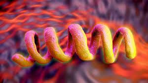

Doenças causadas por bactérias
As doenças causadas por bactérias são relativamente comuns e podem até mesmo causar a morte se não forem adequadamente tratadas. Estima-se que as bactérias causem cerca de metade de todas as doenças humanas. A seguir vamos conhecer um pouco a respeito das doenças bacterianas, seus sintomas, tratamentos e modos de prevenção.
| Doença | Bactéria | Sintomas |
|---|---|---|
| Botulismo | Clostridium botulinun | Náuseas, vômitos, diarreia e dor abdominal |
| Leptospirose | Leptospira | Dores pelo corpo e sangramentos em nariz, gengivas e pulmões |
| Gonorreia | Neisseria gonorrhoea | Dor de garganta e coceira no ânus |
| Sífilis | Treponema pallidum | Manchas no corpo, febre e dor de cabeça |
| Pneumonia | Streptococcus pneumoniae | Falta de ar, mal-estar, dor no peito, tosse e febre. |
| Tétano | Clostridium tetani | Dores fortes e rigidez muscular |
| Hanseníase | Mycobacterium leprae | Perda de sensibilidasde térmica e força muscular |
| Meningite | Neisseria meningitidis | Febre, Irritabilidade e convulsões |
Doenças:
- Botulismo: Infecção bacteriana que provoca um quadro de intoxicação grave, causado pelas toxinas da Clostridium botulinun dos tipos A, B, E e, em raras ocasiões, pelo tipo F.
- Leptospirose: Nome genérico de um grupo de doenças infecciosas causadas por bactérias espiroquetas do gênero Leptospira. A mais frequente é provocada pelo sorogrupo icterohaemorrhagiae, em consequência da forma desordenada de ocupação urbana do rato de esgoto."
- Sífilis: infecção sexualmente transmissível, de evolução lenta e causada por uma bactéria chamada Treponema pallidum. Pode tornar-se bastante grave caso não haja o tratamento adequado, podendo atingir até mesmo o sistema nervoso. 
- Gonorreia: Também conhecida por blenorragia, uretrite gonocócica, esquentamento, corrimento, escorrimento e pingadeira. É uma doença causada pela bactéria Neisseria gonorrhoeae, que afeta, principalmente, a uretra, tanto de homens quanto de mulheres.
- Pneumonia: inflamação que acomete o trato respiratório inferior. Ela pode ser causada por vários micro-organismos, principalmente vírus e bactérias, ocorrendo também em decorrência do uso de medicamentos que podem provocar reações adversas ou ainda pela inalação de substâncias tóxicas.
- Tétano: Doença bacteriana que afeta o sistema nervoso central. É desencadeado pela bactéria Clostridium tetani, a qual pode estar presente no solo, fezes de animais e objetos enferrujados.
- Hanseníase: Doença crônica e infectocontagiosa causada por uma bactéria chamada Mycobacterium leprae, que afeta pele e nervos periféricos,levando a lesões na pele com alterações na sensibilidade e também a problemas relacionados com a força muscular.
- Meningite: inflamação das membranas que envolvem o sistema nervoso central, as chamadas meninges. Pode ser desencadeada por micro-organismos, como vírus e bactérias, mas também pode ter outras causas, tais como câncer, traumatismo craniano e uso de drogas.